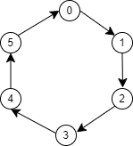

O vRing, ou algortimo distribuído em Anel, é um detector de falha para sistemas distribuídos pull based, onde os processos executam testes sobre os outros processos.
No vRing os processos tem ids sequencias, e cada processo teste seu processo subseguinte, ou seja o processo i testa o processo (i+1)%N.
Quando um processo correto testa outro processo correto ele obtem informações sobre os outros processos não testado. Por exemplo um vRing para 6 processos, com todos corretos.
|  |
|